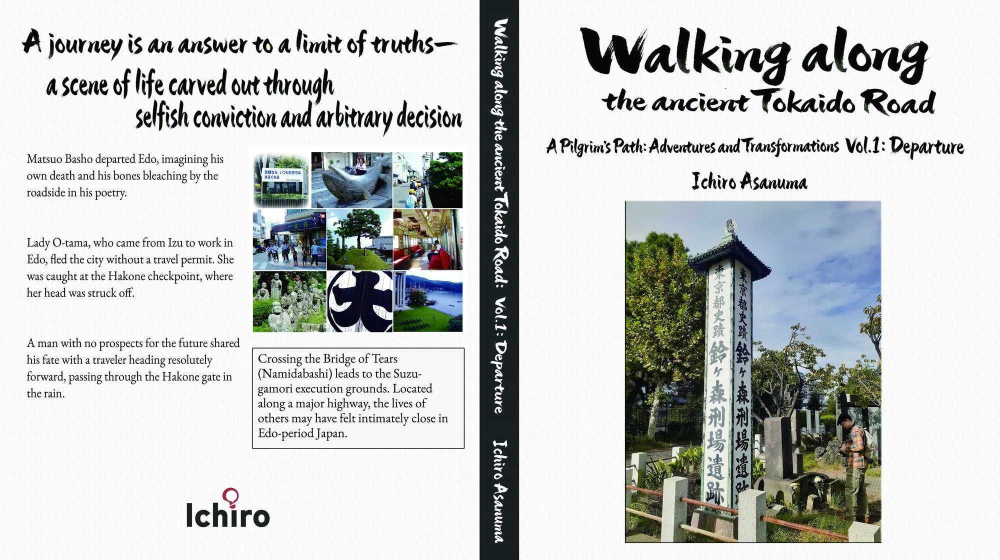
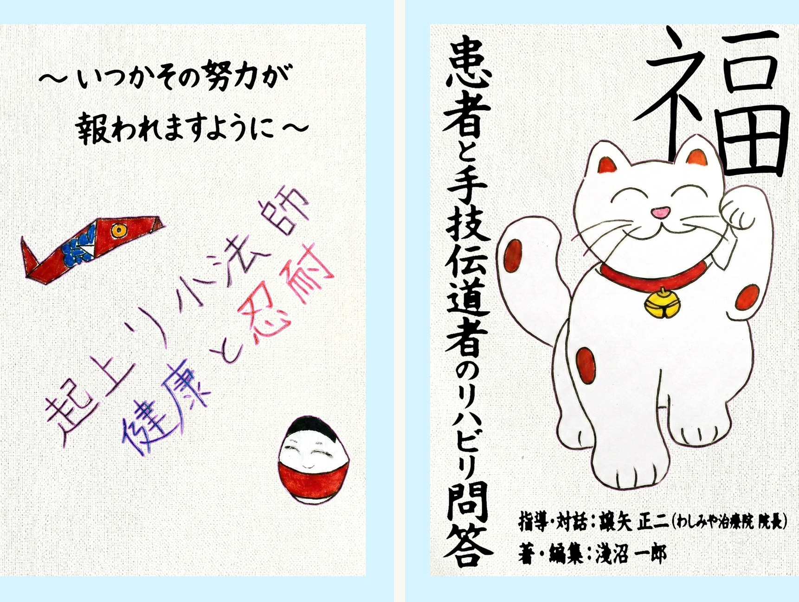

知恵を探す ／ 出版・書籍
出版・書籍
American Book Fest / 2026 International Book Awards Finalist（英語版）
旧東海道を歩く：冒険と変化（全三巻）
「数千年の歴史を重ね、人は考え続けている。だが、なぜ世の中は正しい方向に進まないのか？」
約八か月の入院期間を経て、杖を片手に旧東海道を歩き始めた。目的地に達成すること以外に、取り立ててその旅には何の意義もなかったが、知らないものに取り囲まれて生きていることに気が付いた。出発から16年後に京都にたどり着くまでの人生、考えたこと、気づいたことを記した回顧録。
※ この賞の対象は英語版

患者と手技伝道者のリハビリ問答 〜いつかその努力が報われますように〜
「やる気がないから治療できない」と言い訳するのは、「私のやり方が悪いです」と自己紹介しているようなものです。
元・東京大学医学部附属病院 主任理学療法士、西洋・東洋医学のトリプルライセンスを持つ「手技の達人」譲矢正二院長と、治療方法のない中枢神経系の障害を抱える患者との、1年間に渡る対談集。
病院治療ではなく、人生の中で健康を回復していこうとする患者中心の取り組みを模索し、社会のシステムに過剰に流されることなく、根本原因に向き合いながら取り組むべき健康に向き合う生活スタイルを提案する。

AI Governance for User Organizations（英語版）
ユーザ企業の上位マネージャー、品質保証や監査担当者向け。
DXやイノベーションという言葉に流されることなく、自らの方向を見定めリーディングしていきたい人たちに贈る本。AIガバナンス、プロジェクトの基礎を説明し、AI Agentのガバナンスのあり方を概説する。特にAI Agentのガバナンスや品質保証の手順例について、規制対応のために説明責任が問われる製薬業界のCSVとの整合性を取りながら、同じく説明責任が問われるAI Agentにおける対応を実践的に記載している。
© Chiespring · 運営：淺沼一郎